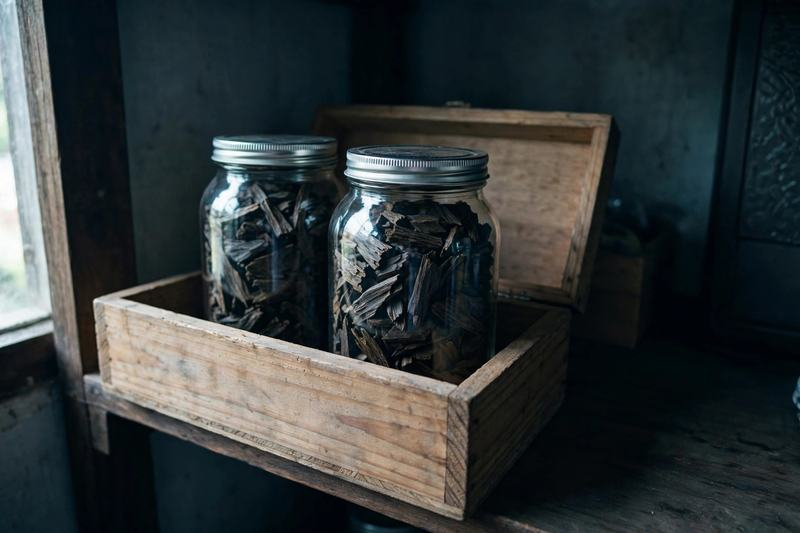

沉香是木质，长期受潮会发霉、变味，甚至长虫。保存的地方要干燥，湿度别太高。南方梅雨季节尤其要注意，密封罐里可以放一小包干燥剂。
如果沉香不小心沾了水，不要暴晒、不要用吹风机热风吹。放在阴凉通风处自然阴干，干透了再收起来。
阳光直射会让沉香的香气成分挥发变质，颜色也会变浅。保存的地方要避光，窗台、阳台、车里都不是好地方。
密封罐放在柜子里、抽屉里就行。玻璃罐透光，最好再套个盒子或者放在暗处。
沉香的木质疏松，容易吸收周围的味道。香水、樟脑、咖啡、香料、烟味，都会串进沉香里。保存的时候要单独存放，远离气味重的东西。
不同产区的沉香也要分开保存。惠安系和星洲系的料放在一起，时间长了香韵会互相影响，品香的时候就分不清了。
密封玻璃罐是常见的选择，密封好、不串味、看得见。陶瓷罐也可以，避光性好。木盒好看，但密封性差，适合短期存放，不适合长期保存。
塑料袋、塑料盒不推荐。塑料本身有味道，时间长了会串进沉香里。密封罐的盖子要拧紧，每次取完及时盖好。
碎料、香材：密封罐，阴凉干燥处，不同产区分开。手串：单独放，不戴的时候收进密封袋或小盒子。精油：避光、密封、恒温，见文章 26。线香香粉：密封、防潮，见文章 27。
不管哪种形态，保存的核心都一样：干燥、避光、密封、单独存放。做到这四点，沉香的香味能保持很久。
保存得当的沉香，香味不会越放越淡，反而会慢慢醇化，香韵更沉稳。这和陈年老料的道理一样：时间让香韵更融合。
但醇化不等于放着不管。定期检查一下：有没有受潮、有没有串味、有没有虫蛀。发现问题及时处理，见文章 24。
| 保存要点 | 怎么做 | 不能怎么做 |
|---|---|---|
| 防潮 | 密封罐 + 干燥处，梅雨季放干燥剂 | 放潮湿处，沾水后暴晒或热风吹 |
| 防晒 | 柜子、抽屉，玻璃罐再套盒子 | 放窗台、阳台、车里晒太阳 |
| 防串味 | 单独存放，远离香水樟脑咖啡 | 和气味重的东西放一起 |
| 容器 | 密封玻璃罐、陶瓷罐 | 塑料袋、塑料盒 |